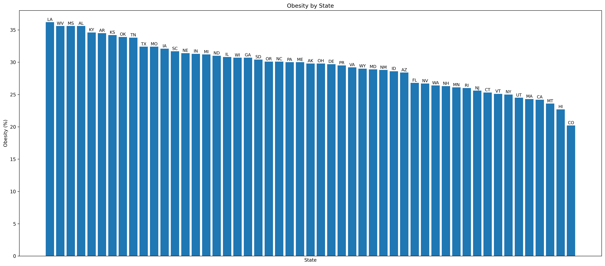

1. Southern states have the highest average obesity rate in the country
The South averages about 31.5 percent obesity, which is higher than the national average of 29.9 percent and higher than regions like the Northeast at 27.4 percent and the West at 26.9 percent. This shows that the South continues to face the biggest challenges when it comes to maintaining healthy weight levels. Overall, this region has a noticeable public health problem that likely connects to lifestyle habits, food access, and general economic conditions.
2. Western states show the lowest average obesity rates
The West averages about 26.9 percent obesity, which is the lowest out of all four regions. This is a few percentage points below the national average and much lower than the South. Although still a very high obesity percentage, this region clearly stands out for having healthier weight outcomes. It points to a combination of daily habits, outdoor activity, and local environments that may support better overall health.
3. The Midwest has higher obesity levels compared to the coasts but slightly lower than the South
The Midwest averages about 31.0 percent obesity, which places it just under the South and well above the Northeast and West. This makes the Midwest the second highest region for obesity. The numbers show that this region also faces real challenges with weight and health, suggesting that many communities here deal with similar barriers to lowering obesity.
Obesity by State

1. The highest obesity rates are concentrated in the top five states
The five states with the highest obesity rates, including Louisiana, Mississippi, West Virginia, Alabama, and Kentucky, all have obesity levels above roughly 35 percent. These states stand out clearly from the rest of the chart, showing that the most severe obesity levels are concentrated in a small group rather than evenly distributed.
2. The lowest obesity rates appear in a distinct group of five states
The five states with the lowest obesity rates, such as Colorado, Hawaii, Massachusetts, California, and Utah, fall near or below 25 percent. These states form a clear lower group on the chart, separated from the highest-ranked states by a sizable margin.
3. There is a large gap between the top five and bottom five states
Comparing the top five states to the bottom five shows a difference of more than ten percentage points in obesity rates. This wide gap highlights how strongly obesity outcomes can differ by state and suggests that regional conditions and lifestyle factors play an important role.